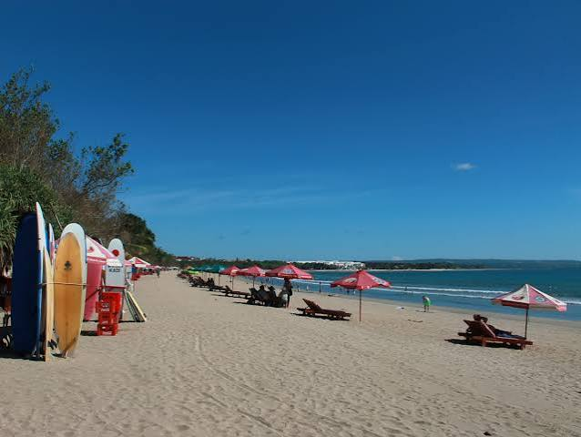

Pantai Kuta
Pantai Kuta adalah salah satu destinasi wisata pantai paling terkenal yang terletak di Kecamatan Kuta, Kabupaten Badung, Bali, Indonesia. Dikenal secara luas sejak tahun 1970-an, pantai ini menawarkan hamparan pasir putih yang luas, ombak yang ideal untuk berselancar, serta panorama matahari terbenam (golden sunset) yang sangat memukau.
Lihat Detail